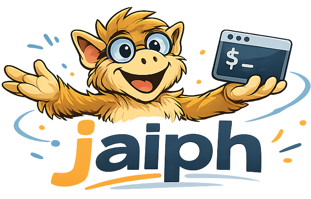

Jaiph is a composable scripting language and runtime for defining and orchestrating AI agent workflows. It supports native bash commands and a set of custom primitives to combine prompts with strict checks.
curl -fsSL https://jaiph.org/install | bashThe installer will install the version 0.2.0 of Jaiph to ~/.local/bin. Check out the CHANGELOG to see what's new in the nightly branch and use jaiph use nightly to switch.
Jaiph workflows are typically executable .jh files with a shebang.
The core primitives are rule, prompt, function and workflow. You can also embed any bash code inside your workflows and rules, and pass arguments to them in a similar way to bash scripts.
#!/usr/bin/env jaiph
rule name_was_provided {
if [ -z "$1" ]; then
echo "You didn't provide your name :(" >&2
exit 1
fi
}
function format_text() {
fold -s -w 80
}
workflow default {
ensure name_was_provided "$1"
response = prompt "
Say hello to $1 and provide a fun fact about a person with the same name.
"
echo "$response" | format_text > hello.txt
}Running the workflow:
➜ ./say_hello.jh Jakub && cat hello.txt
running say_hello.jh
workflow default
▸ rule name_was_provided
✓ 0s
▸ prompt prompt (greeting)
✓ 9s
▸ function format_text
✓ 0s
✓ PASS workflow default (8.9s)
Hi Jakub.
**Fun fact:** **Jakub Marian** is a Czech linguist, mathematician, and polyglot
who speaks over a dozen languages and runs a popular site (jakubmarian.com)
with maps and data on European languages—including maps of which European
languages use “yes” and “no” vs. “ja”/“da”-style words. So if you ever look up
“European language maps,” you might run into another Jakub’s work.Jaiph has native support for testing. All files that end with
*.test.jh are treated as tests.
And Jaiph highly recommends testing your workflows!
#!/usr/bin/env jaiph
import "say_hello.jh" as hello
test "without name, workflow fails with validation message" {
# When
response=$({ hello.default 2>&1; } || true) # this way bash captures stderr
# Then
expectEqual response "You didn't provide your name"
}
test "with name, returns greeting and writes hello.txt" {
# Given
mock prompt "Hello Alice! Fun fact: Alice in Wonderland was written by Lewis Carroll."
# When
hello.default "Alice"
# Then
content=$(cat hello.txt)
expectContain content "Hello Alice"
expectContain content "Alice in Wonderland"
}Example failing run output:
➜ ./say_hello.test.jh
testing say_hello.test.jh
▸ without name, workflow fails with validation message (0s failed)
✗ expectEqual failed: 0s
- You didn't provide your name
+ You didn't provide your name :(
▸ with name, returns greeting and writes hello.txt
✓ 0s
✗ 1 / 2 test(s) failed
- without name, workflow fails with validation messageThis is the workflow used in the Jaiph codebase to ensure compilation and tests pass. Note the
conditionals, which are used in the same way as in bash, and the recursive flow: if compilation
or tests fail, a prompt is triggered, and the ensure_ci_passes workflow runs again.
The workflow uses custom config to enable agent YOLO mode. Otherwise the agent
cannot
run some commands (for example npm test). By default Jaiph runs agents in their
default, more secure modes.
#!/usr/bin/env jaiph
config {
agent.command = "cursor-agent --force"
}
rule project_compiles {
npm run build
}
rule tests_pass {
npm test
}
rule e2e_tests_pass {
npm run test:e2e
}
workflow ensure_ci_passes {
if ! ensure project_compiles; then
prompt "Fix failing compilation so npm run build passes."
run ensure_ci_passes
return 0
fi
if ! ensure tests_pass; then
prompt "Fix failing tests so npm test passes."
run ensure_ci_passes
return 0
fi
if ! ensure e2e_tests_pass; then
prompt "Fix failing e2e tests so npm run test:e2e passes."
run ensure_ci_passes
return 0
fi
}
workflow default {
run ensure_ci_passes
}In the run below, e2e tests fail, so Jaiph ran a prompt to fix them, then called the workflow again recursively to re-run all checks.
➜ jaiph git:(main) ✗ .jaiph/ensure_ci_passes.jh
running ensure_ci_passes.jh
workflow default
▸ workflow ensure_ci_passes
· ▸ rule project_compiles
· ✓ 1s
· ▸ rule tests_pass
· ✓ 12s
· ▸ rule e2e_tests_pass
· ✗ 3s
· ▸ prompt prompt
· ✓ 21s
· ▸ workflow ensure_ci_passes
· · ▸ rule project_compiles
· · ✓ 0s
· · ▸ rule tests_pass
· · ✓ 13s
· · ▸ rule e2e_tests_pass
· · ✓ 6s
· ✓ 19s
✓ 56s
✓ PASS workflow default (56.4s)
curl -fsSL https://jaiph.org/install | bashTo install the nightly branch instead:
curl -fsSL https://jaiph.org/install | bash -s nightlyThen verify the installation:
jaiph --versionSwitch installed version:
jaiph use nightly
jaiph use 0.2.0./path/to/main.jh "arg1" "arg2" "arg3"Arguments are passed exactly like bash scripts ($1, $2, "$@").
When you call a workflow, it executes the workflow default entrypoint.
By convention it is recommended to keep your workflows in the
<project_root>/.jaiph/
directory. It ensures Jaiph detects workspace root and configures the agent correctly.
Jaiph stores all command output in .jaiph/runs/ directory. It is recommended to add it
to your .gitignore.
Jaiph supports native test scripts via the *.test.jh convention and first-class
test "description" { ... } blocks. When you run the executable
*.test.jh file, it is executed as a test.
Runtime behavior is controlled by in-file config and environment variables. See configuration docs for precedence and keys.
For command syntax and flags, read CLI reference.
To get started from scratch: Getting started. For AI agents: Agent Skill.
config { ... }agent.backend (cursor | claude), agent.command, agent.trusted_workspace, run.logs_dir, etc. Environment variables override. See Configuration.import "file.jh" as aliasrule name { ... }$1, $2,
"$@") forwarded by ensure.
workflow name { ... }function name() { ... }ensure ref [args...] · ensure ref recover <stmt> · ensure ref recover { stmt; ... }ensure my_rule "$1"). With recover, the step becomes a bounded retry loop: run the rule; on failure run the recover body (one statement or a { stmt; stmt; ... } block); repeat until the rule passes or max retries is reached, then exit 1. Max retries default to 10; set JAIPH_ENSURE_MAX_RETRIES to override. See Grammar.run refrun is not allowed inside a rule; use
ensure to call another rule or move the call to a workflow.
jaiph run, the progress tree shows each step. In TTY mode, a single bottom line RUNNING workflow <name> (X.Xs) is updated in place (e.g. every second) and removed when the run finishes; the tree itself is identical to non-TTY (no per-line live timers). For workflow, prompt, and function steps called with arguments, the argument values are shown inline in gray after the step name (comma-separated in parentheses; no parameter names or internal refs). Values are truncated at 32 characters. See CLI reference.if ! ensure ref; then run ref; fi · if ! <shell>; then ... firun, prompt, and shell commands.prompt "...".jaiph/runs/ step logs (for example:
*-jaiph__prompt.out and *-jaiph__prompt.err). Jaiph also writes
run_summary.jsonl in each run directory and skips creating empty step log files.
test "description" { ... }*.test.jh are run as test suites.mock prompt "..."prompt call to return the given string instead of calling the agent.mock prompt { if $1 contains "..." ; then respond "..." ; fi }elif / else as needed. See Testing.mock workflow · mock rule · mock functionexpectEqual var "value" · expectContain var "substring"expectEqual checks exact match; expectContain checks that the variable contains the substring. Fail the test if the check does not hold.All language primitives can be freely combined with bash code—they are not isolated or blocking, but instead are interoperable with standard shell scripting within your workflows and rules.
Getting started · Agent skill · Grammar · Testing · Configuration · CLI reference